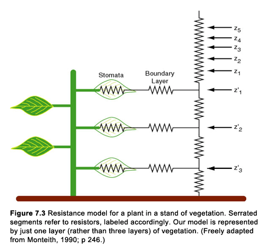
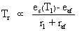

John A. Dutton e-Education Institute
SimSphere Workbook: Chapter 7
Introduction
Let us now take a closer look at plants and at our plant model. Recall that the model treats the vegetation layer as a 'big leaf'. In the big leaf model, we imagine that the flux relationships and ambient conditions pertain to a single big leaf, which is identical to saying that the energy balance for a single leaf pertains to all of the leaves, each of which is identical to all the others; however we do not quite go so far as to make the entire vegetation canopy a single uniform leaf. Our big leaf is porous, having interleaf air spaces which envelop a canopy microclimate that is different from that in the atmosphere above the canopy.
Below the leaf canopy and its air spaces lies the bare soil. Imposing a layer of vegetation between atmosphere and soil results in some significant differences between the bare soil and vegetation cases: [1] The ground fluxes are exchanged between the soil and interleaf air spaces, rather than directly between soil and the air above the canopy, [2] the radiative fluxes are distributed between bare soil and vegetation according to the density of vegetation and [3] the plants extract water not from the soil surface but from a deeper root zone. This structure allows for a decoupling between the atmosphere above the big leaf, the canopy microclimate, and the soil surface. Thus, vapor flux from the leaves change the local specific humidity inside the canopy, whereas over bare soil the water vapor introduced at the surface is readily mixed to higher levels. Therefore, the water vapor in a plant canopy may be restrained from mixing due to the lower wind speeds within the interleaf air spaces. Whether a group of plants can completely 'take control' of their environment or not is a question that has not been fully explored, but we will attempt to do so in a later scenario.
An important question that we will pose in later chapters is how the plant microclimate differs from that for the atmosphere over bare soil. In so doing we will investigate to what extent plants can control their microclimate, including the very important fluxes of sensible and latent heat. In this chapter, we first examine the vapor and sensible heat flux pathways between the big leaf (and the soil) and the air layer above the canopy, and then discuss the mechanisms by which the leaf regulates transpiration.
Latent heat fluxes from the leaf
Let us consider some elementary relationships governing the fluxes of heat and water vapor between the plant and the environment. Recall from the last scenario and the attendant figure, that the flux of water vapor from a plant (or latent heat flux) is called the transpiration. The transpiration flux must pass through several resistors between the interior of the leaf and the airstream above the plant canopy. First is the resistance imposed by the leaf skin, then the air resistance in the leaf boundary layer, and finally the air resistance between the interleaf air spaces and the atmosphere above the plant canopy.
Now, look at the whole pathway for water vapor between the leaf and the air layer above the plants. Can the plant really influence these resistances or is it subject to the whims of the environment? After all, there are a many number of factors that play a role in the regulation of these resistances. Some of these factors originate in the environment and some in the plant. Like reflexes in a human being( perspiring, blinking, etc.) our own responses, especially those on which we depend for survival, are regulated without conscious intervention. We believe that plants can exert a reflexive control under some circumstances (recall our reference to Idso (1983) in the last scenario). They can regulate the size of the openings in their leaf through which the vapor passes to the outside of the leaf, but perhaps no more than we can regulate the size of the pupils in our eyes. These openings, shown in Figure 7.1, are the stomates. Plants regulate their stomatal aperture, and, in turn, their stomatal resistance in such a way as to limit or augment the flow of water to the outside.
Consider the transpiration flux (T) per leaf area (A) in resistance notation, of the form given in Eqn. 3.1, referring only to the series resistance of stomata and leaf boundary layer. This formulation is elaborated upon in Eqn. 7.1 for the case of a leaf situated inside a canopy. Note that the potential drop in specific humidity is from saturated, at the leaf temperature Tl, to that in the interleaf air spaces where the specific humidity is qaf. The ability of the stomates to impede the flow of water vapor from the interior of the leaf to the atmosphere can be represented by a resistance rs, which is called the stomatal resistance. (The inverse of stomatal resistance, a term favored by many plant scientists, is the stomatal conductance gs.) Stomatal aperture is controlled by cells on the leaf epidermis surrounding the stomatal cavity; these are called guard cells. Beneath the epidermis lie the mesophyll cells, the factories responsible for photosynthesis. Some aspects of this structure are shown in Figure 7.1, which is taken from a book by Jones (1983). The subsurface (mesophyll) cells are surrounded by intercellular air spaces, the substomatal cavities within which water vapor prepares to exit through the stomates and carbon dioxide molecules prepare to undergo photosynthesis. These substomatal cavities are busy two-way streets with carbon dioxide molecules and water vapor molecules hurrying in different directions, along with unwanted constitutents from the outside, such as sulfur dioxide and ozone. Water passes from the inside of the leaf through parallel channels: the stomates (within which the flow is governed by stomatal resistance) and the cuticle (within which the flow is governed by the cuticular resistance (rcut but expressed as rc by Jones in Figure 7.1); the cuticle is a hard, waxy surface on the leaf, through which atmospheric constitutents can pass only with great difficulty.) Since the cuticular resistance is usually an order of magnitude larger than the stomatal resistance, the principle channel for water vapor is through the stomates and we will henceforth assume that the leaf resistance rl is approximately that of the stomates. Our model accounts for both rs and rcut but the latter exerts almost no effect on the results and its exact or even approximate values are only guesses. Thus, for the present we can consider the transpiration stream from a leaf to the air to pass through two series resistors before it can escape to the interleaf air spaces: The stomatal resistance and the leaf boundary layer resistance raf. These two resistors are represented in the denominator of the flux equation (Eqn. 7.1).
Now, raf is governed by the mechanics of laminar fluid flow (of air) over an object, in this case the leaf. In accordance with the theory of heat transfer, raf decreases as the wind speed increases and decreases with decreasing leaf size (Campbell, 1977; pp 66-67). Thus the leaf boundary layer resistance will tend to be small in strong winds when the leaf size is small. (In addition to wind speed, you can also change leaf size in the initial conditions of the model.)
Ignoring the cuticular resistance, the total resistance to water vapor from the interior of the leaf to the surrounding air spaces is rs + raf . Naturally, leaves have two sides, so Figure 7.2 (taken from Monteith 1990; p 188; see also his figure 9.6) shows the two parallel branches from both sides of the leaf; the fluxes from both sides of the leaf join in parallel and make their way to the top of the canopy. The top side of the leaf is called the adaxial side and the bottom side the abaxial side. Some leaves transpire through only a single side, having no stomates on the other face. (Here, we will stop short of describing the further adventures of the transpiration stream in moving from the air in the interleaf air space surrounding the leaf boundary layer through the atmospheric surface layer above the plant canopy.)
Figure 7.3 (Monteith, 1990; p 246) shows a many tiered canopy model in which the fluxes from each leaf layer join the main stream of fluxes. The flux from each leaf level moves from the leaf to the surrounding air space (through stomatal and leaf boundary layer resistances) and thence to the top of the canopy. The lowest segment of the vapor flux is the evaporation from the bare soil (LeE) at the base of the canopy. Evaporation from the surface layer of bare soil is governed by the same constraints discussed in the second scenario, (e.g., the moisture availability). However, the sunlight and windspeed are limited by the presence of the vegetation and the resistance between the surface and the interleaf air spaces is increased due to a reduced wind speed inside the canopy. The sum of the transpiration and the surface evaporation is called the evapotranspiration.

Such multi-layered models of plant vapor and heat fluxes, as depicted in Figure 7.3, can be quite elaborate, if not cumbersome and unnecessary. (You may wish to note that some models employ two vegetation layers. Most of the fluxes occur in the upper third of the canopy in the sunlit leaves. Since our model employs a single layer of vegetation, there is only one pair of air resistors to consider within the vegetation canopy: one between the leaf surface and the surrounding air and another between the ground surface and the interleaf air spaces. After that, the ground fluxes and leaf fluxes join and move above the canopy through air resistance at the top and above the canopy, called ra; this resistance, like all resistances we have see thus far, decreases with increasing wind speed.
Sensible heat flux
Unlike vapor flux, the sensible heat flux, H, from the leaves does not originate from inside the leaf, but from the surface of the leaves and so does not need to pass though the stomates. Resistance equations governing sensible heat flux in our model are identical to that in Eqn 7.1, but without the stomatal resistance component. Note that in Figure 7.2 the sensible heat flux H is depicted on the left side and the latent heat flux on the right side of the figure. Sensible heat flux also originates at the bare soil surface beneath the canopy, and flows upward through the air resistance between soil and interleaf air spaces.
The two components of evaporated water flux (transpiration and bare soil evaporation) and the sum of the vegetation and bare soil sensible heat flux are limited by the total net radiation over the canopy. In the model, heat is not stored in the vegetation, but substrate sensible heat flux is exchanged between the bare soil surface and the substrate. We also make the assumption that resistances for heat, water vapor and momentum are equal inside the plant canopy. There are two vegetation parameters which must be understood in more detail before implementing various plant canopies in our model, however: The leaf area index and the stomatal resistance.
Leaf area index
One of the most complex concepts in this type of model is to calculate the total fluxes over a horizontal surface area. Fluxes are exchanged between the surface area of the leaves and the environment, as well as between the soil surface and the environment. The leaf surface area is not the same as the horizontal surface area, however. To equate fluxes over leaf surfaces to those over a horizontal surface, one must know the total surface area of the leaves, among other parameters. The concept of a surface is easier to imagine for a horizontal ground surface than for a multi-faceted leaf canopy. A useful parameter in determining the net canopy flux over a horizontal surface area is the ratio of total one-sided leaf area to a unit of underlying horizontal surface area. This ratio is called the leaf area index or LAI. The LAI tends to range from a value of zero (bare soil ) to about 7 for a dense canopy. Values less than about 3 pertain to canopies in which bare soil patches become visible with decreasing LAI. At small LAI (e.g., less than values close to 1) the 'big leaf' model is no longer appropriate. Instead, the plant canopy is more accurately depicted as clumps of vegetation with a specific LAI covering a fraction of the surface (Fr) and separated by areas of bare soil. Let's ignore this complication for the present and avoid low values of LAI. Both the LAI and the fractional vegetation cover (Fr) can be specified in the model.
You might ask, 'why is just the one side of a leaf and not both sides considered in the LAI'. The answer is that many leaves have stomates on one side only, or at least they undergo most of the transpiration and sensible heat flux on one side. (This is not always the case and the bookkeeping of all the fluxes is definitely a source of confusion, even for the modeler.)
Leaf area index is used in many ways. It is a measure of the amount of green leaf biomass in a vegetation canopy. In the model, leaf area index is used to partition the solar and long wave radiation between the underlying soil and the leaves, the larger the LAI the smaller the amount of sunlight reaching the underlying soil surface. (This partition function also depends on solar zenith angle, the lower the sun the less underlying bare soil 'visible' to the sun.) Leaf area index is also used to scale the leaf fluxes to a horizontal surface for a plant canopy. As we have said, this scaling problem is presently a very difficult one to deal with and it will be discussed briefly later on.
Stomatal resistance
Stomatal resistance is a measure of the aperture size of the stomates. As such, the stomatal resistance governs the flow of water vapor through the stomates. Since there are thousands of stomates on a leaf, the individual resistance for all the stomates are added together in parallel (the inverse of the sum of the inverse resistances for each stomate) to equal the average stomatal resistance for the leaf.
For most plants (the so-called C3 and C4 plants, but not for CAM plants which transpire at night), stomatal resistance is thought to be a function of several variables as expressed in Eqn. 7.2:)
- The amount of absorbed sunlight, more precisely the amount of photosynthetically active radiation (PAR).
- The substrate and/or leaf water status,
- The vapor pressure deficit for the leaf (the difference in vapor pressure between the inside and the outside of the leaf)
- The ambient carbon dioxide concentration
- The leaf temperature.
Let us treat each of the above factors one at a time.
Solar flux
Stomatal resistance decreases with increasing solar flux. Since the PAR is roughly one-half the total solar flux, stomatal resistance will tend to decrease with time during the morning and increase with time in the afternoon. Various studies show that the sensitivity of stomatal resistance to light intensity is greatest at low light intensity and effectively vanishes as the light becomes stronger. Alternately stated, the leaf is no longer light sensitive above some threshold light intensity. This threshold is typically about 50-200 Wm-2 for the total solar flux, which is roughly the amount received at midday beneath a fairly overcast sky at mid latitudes in summer. Thus, the curve of stomatal resistance versus time tends to reach a minimum during the middle part of the day, but it is relatively flat for several hours around noon when the sun is shining.
Leaf or root zone water status
Stomatal resistance tends to increase as water becomes more limiting. This seems reasonable since the plant is trying to protect itself from water loss. In this context, the plant really does exercise its judgment, but it does so in such an obscure fashion that plant scientists are pulling each other's beards arguing about how the plant does it! The prevailing opinion as of 1990 was that the water content in the root zone is the important governing parameter. In the words of Jones (1983), 'There is now strong circumstantial evidence that the plant growth regulator (a hormone produced by the plant) abscisic acid or ABA is involved in mediating most responses to water stress.' This statement is taken to mean that abscisic acid is passed from the root zone to the leaves to stimulate stomatal opening and closing. In short plants, this hormone is transferred in the sap in a matter of minutes or at most an hour or so between the roots and the leaves. In trees, this process takes hours.
All the votes have not yet been counted in the contentious issue of whether leaves or roots control the stomatal opening. Before about 1985 most scientists were willing to believe that the control of stomatal resistance lay in the leaf water status. Later, some scientists became convinced that the stomates perceive water deprivation only through messages from the roots in the form of ABA. Others felt and continued to feel that the leaf water status controls the stomatal opening, at least on a short term, since a transient and partial stomatal closure is often reported to occur near midday, (midday stomatal closure) even when the soil moisture content is not changing very rapidly with time. Recently there has been an attempt by a plant scientist named Tardieu to wed these two ideas, root zone control by ABA and leaf control by sensing the leaf water content.
For now, we emphasize the leaf water status control, although it seems probably that both root and leaf have a say in the matter. When you run the simulations with this mechanism of leaf control in effect, you will find out how easy it is to surmise that the roots control the stomatal resistance, as the root zone soil water content still plays a role in the stomatal resistance, though by indirect means even though no direct relationship exists in the model. A secondary option (called the Deardorff formulation) allows the stomatal resistance to vary with soil water content. You can choose the Deardorff formulation in the model for calculating stomatal resistance in the model, if you like. But keep in mind, in choosing the formulation you also chose sides in this controversy.
Vapor pressure deficit
Equally little understood is how vapor pressure deficit (VPD) affects the stomatal resistance. Since vapor pressure (e) is closely proportional to specific humidity, let us write Eqn. 7.1 in terms of vapor pressure decrease from the leaf es(Tl) to that in the interleaf air space (eaf); this difference we will define as the vapor pressure deficit, although the latter can be defined and is defined elsewhere in terms of other pairs of vapor pressures (e.g., between the interior of the canopy and the atmosphere above). All that is really accepted by plant scientists is that the stomatal resistance tends to increase with increasing vapor pressure deficit, es(Tl) - eaf. How the plant accomplishes this adjustment remains a mystery. The sensitivity of stomatal resistance to VPD is highly variable from one type of plant to another, but it is especially significant in beans and trees.
Again, it would seem that the plant has a say in how much water is lost, since rl increases in response to an increasing VPD, which constitutes the numerator of Eqn. 7.3. Note that the numerator, however, represents the demand of the atmosphere for evaporation, whereas the VPD effect on rl, which operates through the denominator, represents a compensation for the demand. Since both the numerator and denominator of Eqn. 7.3 become larger with increasing VPD the net effect may be that transpiration does not increase monotonically (one increasing as the other increases) with the numerator in this equation. It is possible for the vapor flux to increase or decrease or to first increase and than decrease with increasing VPD. The latter is sometimes referred to as the 'feed forward' process, so named by Farquhar (1978). Later, we will address the question of feedback between vapor pressure deficit and stomatal resistance.
Some plants are much more sensitive to VPD than others. Soybeans, for example, have a large sensitivity of stomatal resistance to VPD. Corn, on the other hand has a relatively small sensitivity to VPD. For corn we should not expect to find a braking effect on rl due to increasing VPD. Thus, we have made the sensitivity of stomatal resistance in corn to VPD equal to zero. (You will later have the option in the simulations to chose soybeans, which would have a significant sensitivity to VPD.)
Carbon dioxide concentration and leaf temperature
The remaining two factors in Eqn. 7.2, carbon dioxide concentration and leaf temperature, are relatively unimportant for normal atmospheric fluctuations. Carbon dioxide concentration is presumably increasing with time over many decades and may double in the next century. While we may want to simulate both the CO2 fluxes and the effect of increased ambient carbon dioxide concentration on stomatal resistance later in the course, the present level of carbon dioxide concentration can be treated as a constant, about 330 parts per million by volume (ppmv). That value varies by less than 10% above the canopy during a season.
Finally, stomatal resistance is not insensitive to leaf temperature especially at the boundaries of tolerance, e.g., 5 and 35° C, beyond which the plant tends to shut down. Some measurements suggest that, up to a point, an increase in temperature favors an increase in photosynthesis. We will assume that the plant is growing within the bounds of temperature tolerance and ignore the effect of temperature within the tolerance range, as the effect is not well studied.
There are about as many stomatal resistance formulas as individuals who have tried to model the stomatal resistance. One such formulation has been suggested by Jarvis (1976). The Jarvis equation, expressed by Eqn. 7.2, simply equates the stomatal resistance to the product of various functions. Let us consider just three of them in Eqn. 7.2: one representing solar flux f(S), one representing leaf potential f(ψl) or soil water content f(w) - soil water potential is an option in some models -- and one representing the effect of VPD. We favor the Jarvis formulation using the leaf water status factor f(ψl); the Deardorff equation uses f(w). These functions vary from 1.0 to infinity. Although a full discussion of stomatal resistance lies outside the scope of this course, the relationship between rs and VPD, as we formulate it, is somewhat more complex (and indirect) than indicated by Eqn. 7.2.
The equation also contains a factor rsmin , which is the stomatal resistance when the leaf or soil is at full water capacity, at full sunlight and when the vapor pressure deficit effect is negligible. This type of parameter is sometimes called the minimum stomatal resistance, although it is somewhat of an elusive parameter, even in our model. Minimum stomatal resistance is bandied about freely and sometimes without much thought in the literature. We might think of this parameter loosely as the value of rs on a sunlit side of a sunlit leaf at noon on a bright sunny day when the plant is engorged with water (f(ψl) or f(W) = 1.0) (this still begs the issue of the vapor pressure deficit function f(VPD)). Typical values for minimum stomatal resistance vary considerably; e.g., from about 25-50 sm-1 for crops such as corn and soybeans to 200-300 s m-1 for many types of trees. Korner (1979) furnishes a huge table of stomatal conductances for different plants; recall that a conductance is simply the inverse of resistance. Some people refer to the minimum stomatal resistance as that minimum value near midday; the latter is a convenient quantity for comparing day-to-day fluctuations in stomatal resistance. It is not clear if Korner's numbers represent some kind of theoretical minimum stomatal resistance or simply a daily average under unspecified conditions.
Level 1 | Simulation 1 | Simulation 2 | Simulation 3 | Level 2
Simulations
Level 1Lets look at the variation of stomatal resistance for various simulations.
Simulation 1:
- Observe the sensitivity of stomatal resistance to solar radiation
First, plot rs as a function of time for one day. Use the default corn canopy parameters from Chapter 6 with a LAI of 7. This will give you a sense of how rs varies with solar intensity throughout the day. To see the solar effect more clearly, you can simulate a cloudy day by simply changing the cloud factor.
Questions
- Equate a low stomatal resistance with a large stomatal opening. Are the stomates opened up longer on sunny or cloudy days?
- Does the amount of solar radiation on the leaves affect the nighttime stomatal resistance?
- What is the daily minimum stomatal resistance?
- How does stomatal resistance change under cloudy conditions?
Simulation 2:
- Observe the sensitivity of stomatal resistance to root zone soil moisture
Change the vegetation parameterization to Deardorff and assign a wilting point value of 0.12 instead of 0.08. (The official wilting point for the soil is about 0.12 soil water content by volume, equivalent to a moisture availability of about 0.4; field capacity is 0.34 by volume.) Make simulations with 3 different values of the root zone moisture availability Mr equal to the standard value used in the first chapter (0.50), 0.9, and 0.4. This will show you how rs varies with soil water content. Try decreasing Mr well below 0.4 for the surface layer while keeping the root zone moist. Note that the deep layer Mr influences the transpiration only via the stomatal resistance function and therefore it not equivalent to the ratio of evaporation to potential evaporation, as in the bare soil case.
Questions
- How does the minimum stomatal resistance change with varying root zone moisture? Is it as you would have guessed?
- Does the surface layer moisture have a limiting effect on the stomatal resistance at all? Remember, you have just done simulations using the idea that the root zone moisture controls the stomatal openings (you took sides!), and other (Carlson/Lynn) parameterizations not have seen a change in stomatal resistance due to varying moisture availability in the soil.
Simulation 3:
Returning to the standard (Carlson/Lynn) stomatal resistance option and keeping Mr above 0.4, lower the LAI from 7 down to 5, and then to 3 or 2. Next, change the minimum stomatal resistance from 50 to 100 s m-1. For each of these cases, plot the stomatal resistance versus the vapor pressure deficit.
Questions
- What happens to the stomatal resistance and to the fluxes as the canopy becomes thinner?
- Can you explain why the plant is conserving water under these conditions?
- Does vapor pressure deficit relationship make sense in light of the material presented in this chapter?
Level 2
Equation 7.2 tells us that the stomatal resistance, and therefore the latent heat flux from a vegetation canopy, depends on up to 5 physical variables. In level 1, we looked at how rs changes due to each variable independently. We know, however, that as one of these variables changes, another can change as a result and counteract the effect of the original variable on the stomate. For example, if the solar radiation is increased, the stomatal resistance will lower, and more transpiration will take place. However, as more water vapor is evaporated into the canopy, the VPD will lower as well, tending to increase the stomatal resistance and decrease the transpiration rate. This type of negative feedback can be seen in a variety of ways between these 5 variables, in particular the first three in the above list. Think about the interaction between these variables, and the overall effect on stomatal resistance.
Questions
- Can you tell which of these 3 variables has the largest overall control on transpiration and should be given the most consideration?
- As you vary the root zone soil water content Mr does the stomatal resistance change? If so, how does this occur when the model makes no explicit relationship between stomatal resistance and soil water content?
- Vary the wind speed by doubling values near the surface. Does this affect stomatal resistance? If so, would we be justified in adding another component to the stomatal resistance equation, that of wind speed?
- Try fooling around with the leaf water status (Carlson/Lynn) parameterization. Does that theory place more control in the hands of the leaf water status than the Deardorff places on the root zone moisture? (Be careful as you lower the value of Mr; avoid reducing it below a value of 0.4.)
- Try to get an overall feeling how each of these variable impact stomatal resistance, and then relate that to how they impact surface fluxes and eventually temperatures. In other words, don't lose sight of the big picture just because we are looking at microscopic features on leaves!
References
- Campbell, G. S., 1977, An Introduction to Environmental Biophysics, Heidleberg Science Library, Springer-Verlag, New York, 159 pp.
- Farquhar, G. D., 1978, Feedforward responses of stomata to humidity, Aust. J. of Plant Physiol., 15, 787-800.
- Idso, S., 1983, Stomatal regulation of evaporation from well-watered plant canopies: a new synthesis, Ag. Met., 29, 213-217.
- Jarvis, P. G., 1976, The interpretation of the variations in leaf potential and stomatal resistance found in canopies in the field, Phil. Trans. R. Scotland B, 273, 593-610.
- Korner, C., J. A. Scheel and H. Bauer, 1979, Maximum leaf diffusive conductance in vascular plants, Photosynthetica, 13, 45-82.
- Jones, H. G., 1983, Plants and Microclimate, Cambridge University Press, 323 pp.
- Monteith J. L., 1990 Principles of environmental Physics, Second Edition, Arnold, 291 pp.
Terms introduced in this chapter
abaxial surface
abscisic acid ABA
adaxial surface
biomass
cuticular resistance
epidermis
evapotranspiration
feed forward process
guard cells
intercellular air spaces
interleaf air spaces
LAI
leaf area index
leaf boundary layer resistance
leaf resistance
leaf water potential
leaf water status
mesophyll
midday stomatal closure
minimum stomatal resistance
PAR
photosynthetically active radiation
root zone
stomatal resistance
substomatal cavities
vapor pressure deficit
vapor pressure deficit
VPD
Equations
[Eqn 7.1]- 